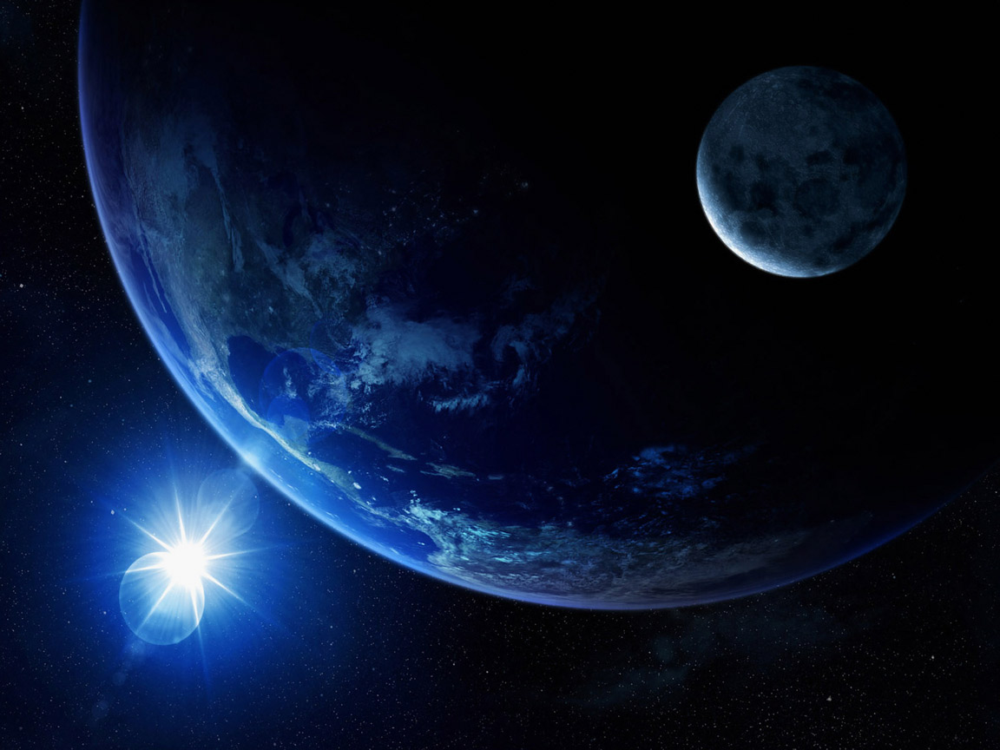

La naturaleza es todo aquello que existe en el universo donde existimos: el cosmos, las galaxias y todo lo que hay en ellas. No obstante, también se suele referir como naturaleza al conjunto de la materia viva e inerte en la Tierra.

Es decir, forman parte de ella todos los organismos vivos que habitan el planeta: microorganismos, hongos, animales y plantas.
A ellos se les suman todas las sustancias materiales y minerales, como el agua, la tierra, el hierro, etc., y todos los procesos propios del planeta, como los fenómenos meteorológicos o el movimiento de placas tectónicas.
Por ejemplo, imagina un bosque en el que hay ciervos, ardillas, insectos, lombrices, bacterias, seres humanos acampando y un río.
El conjunto de estos seres vivos, incluyendo los árboles, más el río, la tierra donde estos seres realizan sus actividades y las condiciones meteorológicas, dan lugar a la naturaleza.
Debemos tener en cuenta que la naturaleza es todo lo que existe y se da sin necesidad de que los humanos intervengamos.
Actividades y expresiones humanas como la civilización, el desarrollo de tecnología, la modificación de terrenos, la cultura y tradiciones no forman parte de ella.
La naturaleza es esencial para la supervivencia de los seres vivos, ya que posee el medio, las condiciones y los nutrientes necesarios para que la vida subsista. Por ejemplo, los seres humanos existimos gracias al agua, el oxígeno que liberan las plantas y la temperatura adecuada para nuestros cuerpos.
.jpg)